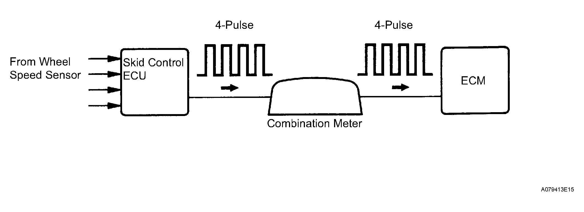

DTC P0500 Vehicle Speed Sensor "A": Description
Vehicles, which are equipped with ABS (Anti-lock Brake System), detect the vehicle speed using the skid control ECU and wheel speed sensor. The wheel speed sensor monitors the wheel rotation speed and sends a signal to the skid control ECU. The skid control ECU converts the wheel speed signal into a 4- pulse signal and transmits it to the ECM via the combination meter. The ECM determines the vehicle speed based on the frequency of the pulse signal.

Courtesy of © TOYOTA, LICENSE AGREEMENT TMS1002DTC DETECTION CONDITION AND TROUBLE AREA
| DTC No. | DTC Detection Condition | Trouble Area |
|---|---|---|
| P0500 | While vehicle being driven, no vehicle speed sensor signal to ECM
|
|